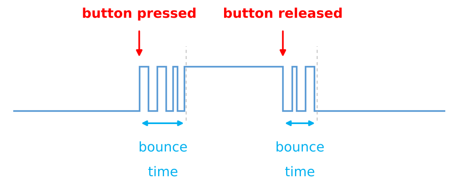
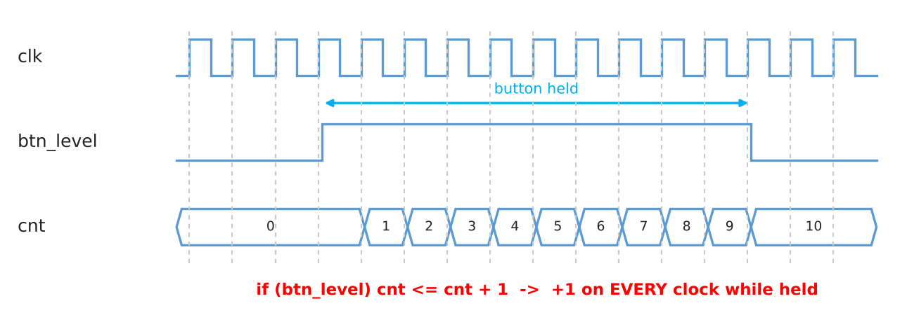
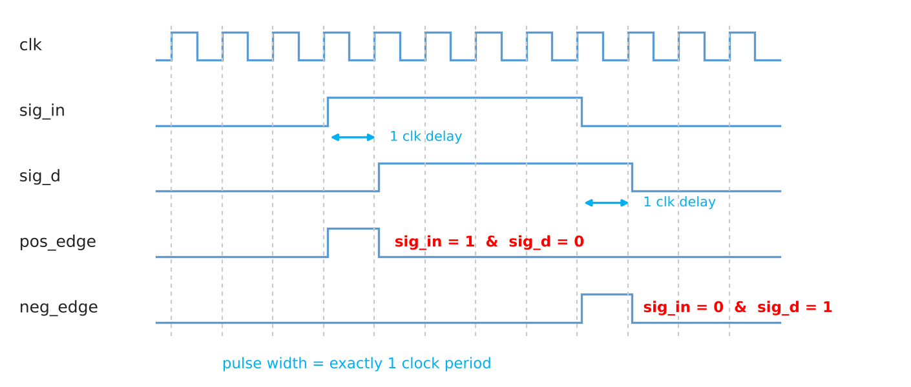
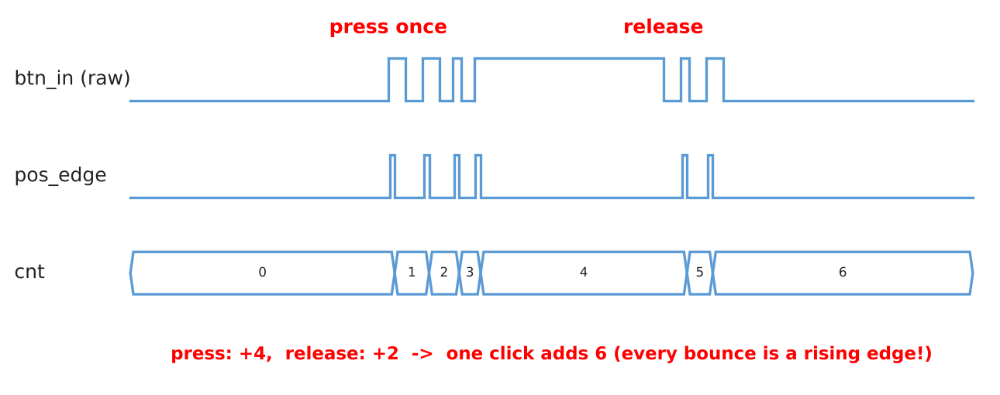
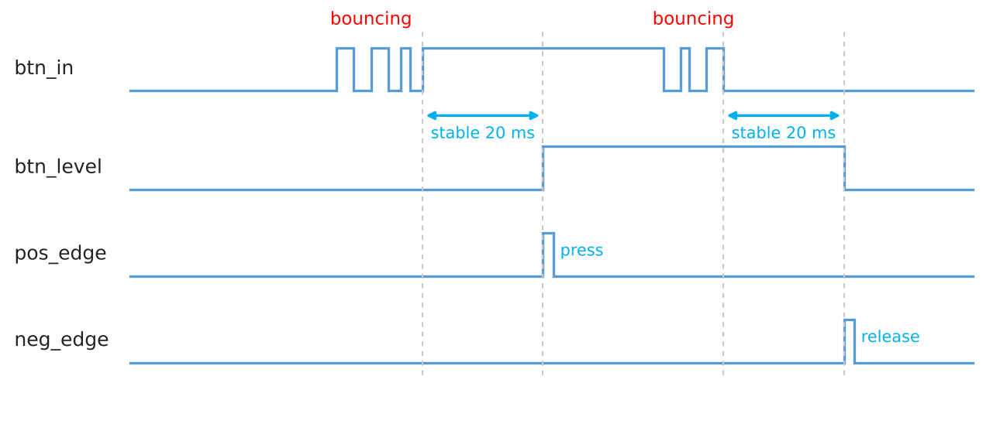
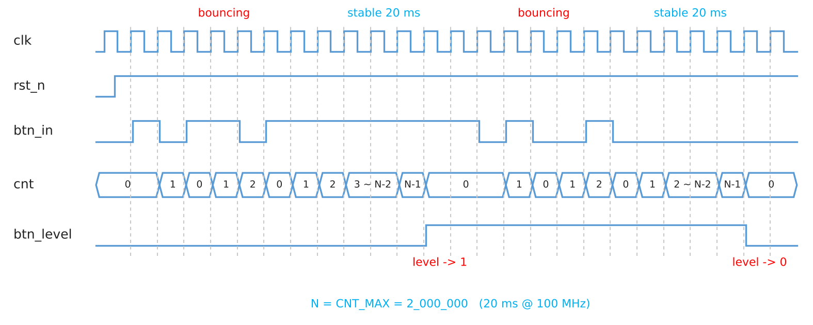
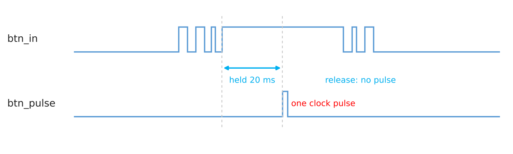
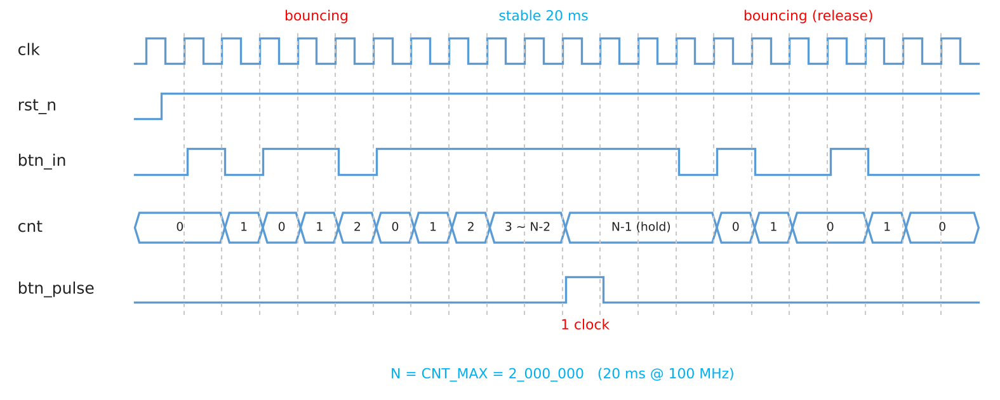

- Digital Logic: Button Debouncing and Edge Detection
Digital Logic: Button Debouncing and Edge Detection
Objectives
- Understand the bouncing behavior of mechanical buttons and its effect on digital circuits
- Master the principle of edge detection (extracting a single-cycle pulse from a level signal)
- Master two counter-based debouncing methods: level-type debouncing and pulse-type debouncing
- Understand the differences between the two methods and when to use each
- Implement the correct behavior: "one press, one response"
Note: The 5 general-purpose push buttons on the right side of the EGO1 board are low when idle and high when pressed (active-high). All code and waveforms in this document assume active-high buttons. Every design in this lab is written as a single module.
1. The Button Bouncing Problem
1.1 Physical Characteristics of Mechanical Buttons
The buttons on the board are mechanical switches. When a button is pressed or released, the metal contacts bounce several times, causing the signal to toggle rapidly between 0 and 1 for about 5~20 ms.

1.2 Why Bouncing Is a Problem
If an un-debounced button signal is used directly to drive a counter:
- You expect "one press, +1"
- What you may actually get is "one press, +3~10"
- Because every bounce produces a rising edge, and each one triggers the counter
This lab solves the "one press, one response" problem in two steps:
- Edge detection: fixes "the circuit keeps responding while the button is held" (Section 2)
- Debouncing: fixes "one press triggers several responses" (Sections 4 and 5)
2. Edge Detection: From Level to Single Pulse
2.1 Why Not Use the Level Directly as an Enable?
Suppose the button signal is already a clean level (ignore bouncing for now), and we want "one press, counter +1". The most direct code is:
always @(posedge clk) begin
if (btn_level)
cnt <= cnt + 1'b1;
end
The problem: btn_level is a level signal. A press lasts roughly 100 ms ~ 1 s, which is tens of millions of clock cycles at 100 MHz. The counter increments on every clock edge while the button is held, so one press adds tens of millions.

What we need is: a high level only in the single clock cycle when the button is pressed. That is what edge detection does.
2.2 Do Not Use posedge on Ordinary Signals
A common beginner mistake is to put an ordinary signal directly into the sensitivity list of an always block:
Wrong:
always @(posedge btn_level) begin
cnt <= cnt + 1'b1;
end
// btn_level here is just an ordinary signal, not a clock or reset
The reason this is wrong: the chip has a dedicated global clock routing network that keeps clock delay low and makes the clock arrive at all flip-flops at the same time. If you use posedge or negedge on an ordinary signal, the synthesis tool treats that signal as a clock. Ordinary routing cannot meet the requirements of the clock network, which can introduce glitches and timing errors, and may even prevent the design from being implemented on the board.
Correct:
always @(posedge clk) begin
if (pos_edge)
cnt <= cnt + 1'b1;
end
Here pos_edge is a signal synchronous to clk. When the input signal has a rising edge, pos_edge becomes 1 for exactly one clock cycle. This detects the transition while keeping the whole circuit running on a single clock.
2.3 Edge Detection Principle
Use a register to store the signal value from the previous clock cycle, and compare the current value with the previous one to detect an edge:
current sig_in : 0 0 0 1 1 1 1 0 0
previous sig_d : 0 0 0 0 1 1 1 1 0
rising pos_edge: 0 0 0 1 0 0 0 0 0 (current = 1 and previous = 0)
falling neg_edge: 0 0 0 0 0 0 0 1 0 (current = 0 and previous = 1)
The corresponding timing waveform:

sig_dlagssig_inby one clock cycle- In the one cycle where
sig_inhas gone high butsig_dhas not yet,pos_edge = 1 - Likewise, in the one cycle where
sig_inhas gone low butsig_dhas not yet,neg_edge = 1
2.4 Edge Detection Code
module edge_detect (
input clk,
input rst_n,
input sig_in, // input signal
output pos_edge, // rising-edge pulse (single cycle)
output neg_edge // falling-edge pulse (single cycle)
);
reg sig_d; // signal delayed by one cycle
always @(posedge clk or negedge rst_n) begin
if (!rst_n)
sig_d <= 1'b0;
else
sig_d <= sig_in;
end
assign pos_edge = sig_in & ~sig_d; // now high, previously low -> rising edge
assign neg_edge = ~sig_in & sig_d; // now low, previously high -> falling edge
endmodule
Edge detection consists of only three parts: one always block that delays the signal by one cycle, and two assign statements. In the following sections, these lines are written directly into each module that needs them.
3. Observing Bounce: Edge Detection on the Raw Button
3.1 Experiment
Without any debouncing, write "edge detection + counter" in one module, and display the count in binary on 8 LEDs:
module btn_raw_cnt (
input clk,
input rst_n,
input btn_in, // raw button, high when pressed
output reg [7:0] led // count value, binary display
);
// Edge detection
reg btn_d;
wire btn_pos;
always @(posedge clk or negedge rst_n) begin
if (!rst_n)
btn_d <= 1'b0;
else
btn_d <= btn_in;
end
assign btn_pos = btn_in & ~btn_d;
// Counter: +1 on every detected rising edge
always @(posedge clk or negedge rst_n) begin
if (!rst_n)
led <= 8'd0;
else if (btn_pos)
led <= led + 1'b1;
end
endmodule
Program the board, press the button once, and observe the count shown on the LEDs.
3.2 Observation and Analysis
One press often increases the count by several. The reason is shown below: during bouncing, every 0→1 transition is a rising edge, and edge detection detects every one of them.

Tip: Use a counter for this observation, not an LED toggle. If bouncing produces an even number of rising edges, the LED toggles an even number of times and ends in the same state, which is easily mistaken for a bug in the code.
Conclusion: edge detection only turns a level into a pulse; it cannot tell a real press from bouncing. The button must be debounced first.
4. Method 1: Level-Type Debouncing + Edge Detection
4.1 Principle: Sample and Wait for Stability
When the input changes, the output does not change immediately; it is updated only after the input has held the new value for 20 ms. Step by step:
- On every clock cycle, compare the button input
btn_inwith the current outputbtn_level - If they are equal: nothing has changed, clear the counter
- If they differ: the button may have changed, start counting
- If the button returns to its old value during counting (they become equal again), it is still bouncing — clear the counter and start over
- If the counter reaches 20 ms: the new level is stable, update
btn_level
This method debounces both press and release. Its output is a clean square wave, delayed by about 20 ms relative to the raw signal. Because the output is a level, edge detection is still needed to obtain the single-cycle pulses btn_pos (press) and btn_neg (release).

4.2 Delay Parameter Calculation
- Target debounce time: about 20 ms
- System clock: 100 MHz → 1 cycle = 10 ns
- 20 ms = 20,000,000 ns
- Required count = 20,000,000 / 10 = 2,000,000
So CNT_MAX = 2_000_000.
Counter width: the count range is 0 ~ 1,999,999, and 2²¹ = 2,097,152 > 2,000,000, so the width is 21 bits, i.e. reg [20:0] cnt.
4.3 Code
Debouncing and edge detection are written in the same module:
module btn_debounce #(
parameter CNT_MAX = 21'd2_000_000 // 20ms @ 100MHz
)(
input clk,
input rst_n,
input btn_in, // button input, high when pressed
output reg btn_level, // clean, debounced level
output btn_pos, // single-cycle pulse on press
output btn_neg // single-cycle pulse on release
);
// ---------------- Part 1: level-type debouncing ----------------
// Update output only if input differs from it for 20ms
reg [20:0] cnt; // 2^21 = 2,097,152 > 2,000,000
always @(posedge clk or negedge rst_n) begin
if (!rst_n) begin
cnt <= 21'd0;
btn_level <= 1'b0;
end
else if (btn_in == btn_level) // no change (or returned to old value): clear
cnt <= 21'd0;
else if (cnt == CNT_MAX - 1) begin // new level stable for 20ms: update
btn_level <= btn_in;
cnt <= 21'd0;
end
else // changed but not yet stable for 20ms: count
cnt <= cnt + 1'b1;
end
// ---------------- Part 2: edge detection ----------------
reg btn_level_d; // btn_level delayed by one cycle
always @(posedge clk or negedge rst_n) begin
if (!rst_n)
btn_level_d <= 1'b0;
else
btn_level_d <= btn_level;
end
assign btn_pos = btn_level & ~btn_level_d; // rising edge: press
assign btn_neg = ~btn_level & btn_level_d; // falling edge: release
endmodule
Signal flow:
btn_in (bouncing) → [debounce] → btn_level (clean level) → [edge detection] → btn_pos / btn_neg (single pulses)
4.4 Timing Analysis

How it works:
- Button pressed →
btn_instarts bouncing - While
btn_indiffers frombtn_level,cntcounts up; when bouncing returns it to the old value, they are equal andcntis cleared - After bouncing ends,
btn_instays at 1 andcntkeeps counting up toN-1 - On the next clock edge,
btn_levelbecomes 1 andcntis cleared; edge detection then outputs a one-cyclebtn_pos - Release works the same way in reverse; finally
btn_levelreturns to 0 and edge detection outputs a one-cyclebtn_neg
In the figure, N = CNT_MAX = 2,000,000; "3 ~ N-2" means roughly two million clock cycles are omitted.
4.5 Simulation Tip
Simulating with CNT_MAX = 2_000_000 means millions of clock cycles per button press, which is very slow. For simulation, temporarily change the default value of the parameter to a small number:
parameter CNT_MAX = 21'd10 // for simulation: only 10 stable cycles needed
The bounce pulses modeled in the testbench must then also be shorter than 10 clock cycles. Remember to change it back to 21'd2_000_000 before programming the board.
5. Method 2: Pulse-Type Debouncing
5.1 Idea
In many cases we only need to know that "the button was pressed once". Then the pulse can be generated directly during the debounce counting, without separate edge detection:
- The counter counts up while the button is high (pressed) and is cleared when it is low
- During bouncing the button returns to low several times, so the counter is cleared several times
- Once the button stays high for 20 ms, the counter reaches
N-1 - A one-clock pulse is output when the counter first reaches
N-1 - The counter then stays at
N-1, so no more pulses are produced while the button is held - After release, the counter is cleared and waits for the next press

Note: this method outputs a pulse only on press; nothing is output on release.
5.2 Code
module btn_debounce_pulse #(
parameter CNT_MAX = 21'd2_000_000 // 20ms @ 100MHz
)(
input clk,
input rst_n,
input btn_in, // button input, high when pressed
output reg btn_pulse // one-clock pulse per press
);
// Count while held, stay at N-1; clear on release or when bouncing low
reg [20:0] cnt;
always @(posedge clk or negedge rst_n) begin
if (!rst_n)
cnt <= 21'd0;
else if (btn_in == 1'b0)
cnt <= 21'd0;
else if (cnt == CNT_MAX - 1)
cnt <= cnt; // keep the value to prevent re-triggering
else
cnt <= cnt + 1'b1;
end
// The counter passes CNT_MAX-2 only once, so only a single-cycle pulse is output
always @(posedge clk or negedge rst_n) begin
if (!rst_n)
btn_pulse <= 1'b0;
else if (cnt == CNT_MAX - 2)
// when cnt is N-2, on the next clock edge cnt becomes N-1 and btn_pulse goes high
btn_pulse <= 1'b1;
else
btn_pulse <= 1'b0;
end
endmodule
5.3 Timing Analysis

- During bouncing,
cntis cleared every timebtn_inreturns to 0 - After a stable press,
cntcounts up toN-1and stays there ("N-1 (hold)" in the figure) btn_pulseis high in the cycle wherecntfirst equalsN-1- On release
cntis cleared; release bouncing only makescntchange between 0 and 1, so no pulse is produced
5.4 Question
In the Method 2 module, suppose edge detection is applied once more to btn_pulse (use a register btn_pulse_d to store its previous value, and let pos = btn_pulse & ~btn_pulse_d). What does pos look like?
Click to see the answer
- In the cycle where btn_pulse is high, btn_pulse_d is still 0, so pos = 1; in the next cycle btn_pulse is already back to 0, so pos = 0. Therefore pos is identical to btn_pulse, and this extra edge detection is redundant. Conclusion: the output of pulse-type debouncing is already a single-cycle pulse and does not need edge detection; the output of level-type debouncing is a level and must go through edge detection.6. Comparison of the Two Methods
| Method 1: Level-type + Edge detection | Method 2: Pulse-type | |
|---|---|---|
| Output of the debounce logic | Clean square wave (level) | Single-cycle pulse |
| Edge detection needed | Yes | No |
| What is debounced | Both press and release | Press only |
| Can detect release | Yes (btn_neg) |
No |
| Long-press detection | Yes (time btn_level) |
Requires modifying the code |
| Code contents | Debounce logic + edge detection logic | Debounce logic only |
| Typical use | General purpose, easy to extend | Only "one press, one action" |
Both methods are common in practice. Method 1 provides more functions and is recommended as the default; Method 2 needs less code and suits simple cases where only the press matters.
7. Lab Exercises
Use one of the 5 buttons on the right side of the EGO1 board for on-board testing. All functions must be written in a single module.
Exercise 1 (Basic): Toggle an LED on Each Press
Add an output led to the Method 1 module btn_debounce, and use btn_pos to make the LED toggle once every time the button is pressed.
- Simulate first (temporarily reduce
CNT_MAXas described in Section 4.5), then restore the original value and verify on the board - On the board, press the button quickly several times and check that each press toggles the LED exactly once
Exercise 2 (Intermediate, optional): Implement with Method 2
Add an output led to the Method 2 module btn_debounce_pulse, implement the same function, and compare the simulation waveforms of the two designs:
- In each design, how long after the button becomes stably pressed does the LED toggle?
- How do the two designs behave differently when the button is released?
Exercise 3 (Extension, optional)
- Respond on release: nothing happens on press; the LED toggles when the button is released (hint:
btn_neg) - Long press to clear: a short press adds 1 to an 8-bit counter (displayed on 8 LEDs); holding for more than 1 second clears the counter (hint: only Method 1 supports this directly — use another counter to measure how long
btn_levelstays high)
Appendix: FAQ
-
Q: The count still jumps after debouncing? A: Check that
CNT_MAXis large enough. 20 ms (2_000_000@ 100 MHz) is recommended. If the value is too small, the output updates before bouncing ends. Also check that you restoredCNT_MAXafter simulation before programming the board. -
Q: The button does nothing at all? A: Check the button pin constraints. The 5 general-purpose buttons on EGO1 are active-high (1 when pressed). If you use another board with active-low buttons, invert the input first.
-
Q: The simulation runs for a long time but the output never changes? A: Temporarily reduce
CNT_MAX(e.g. to 10) for simulation; see Section 4.5. -
Q: Counting misbehaves after changing
CNT_MAX? A: The counter is fixed at 21 bits and can count up to 2,097,151. IfCNT_MAXis set larger than that (e.g. for a higher clock frequency or a longer debounce time), the width ofcntmust be increased as well.